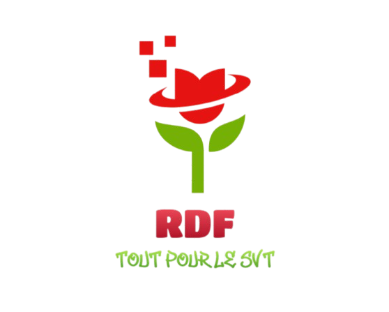

Exposition de Plantes et leur Anatomie
Recherchez une plante :
Type :
Conseils :
À propos
Ce site présente une sélection de plantes et leur anatomie, pour découvrir la diversité du monde végétal et apprendre à mieux les entretenir.